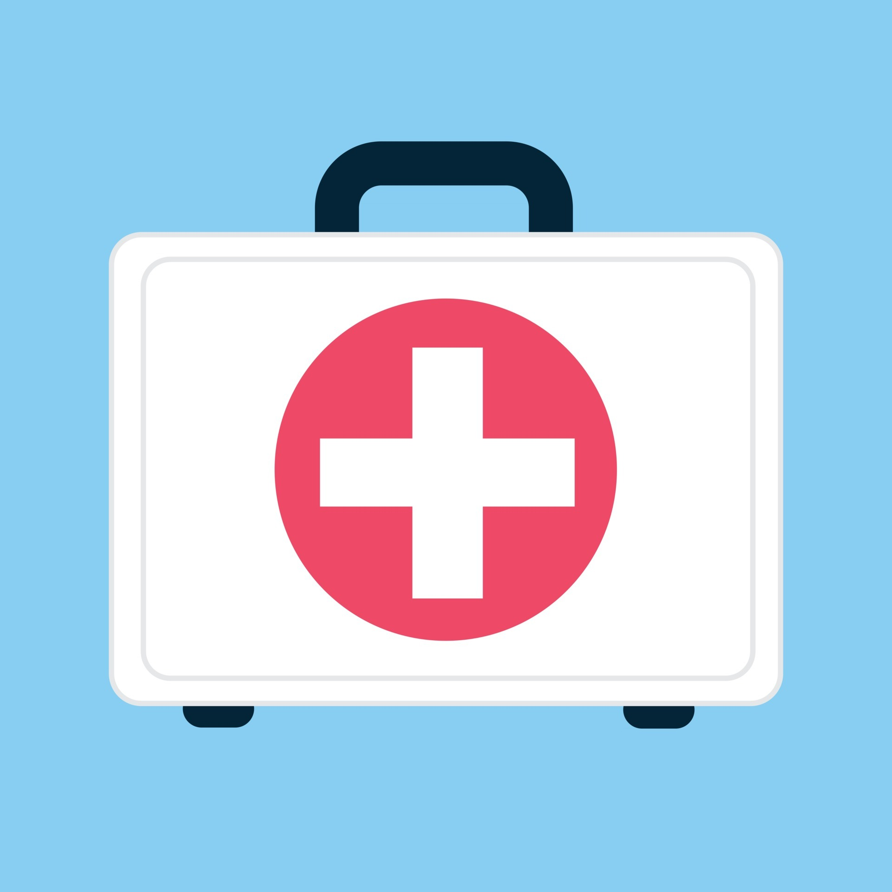
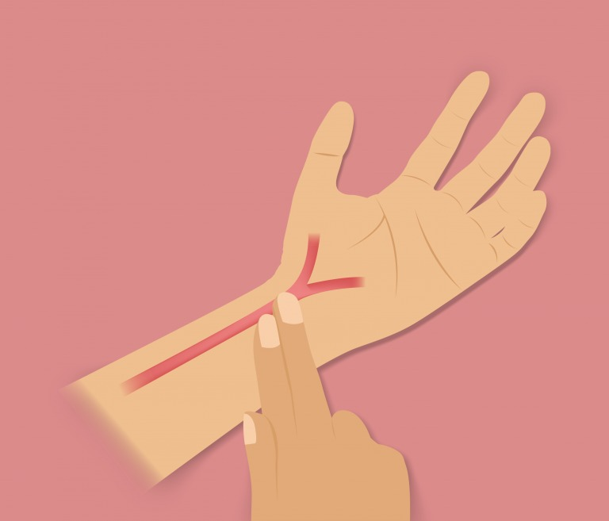

Primeros Auxilios
Conocimientos básicos para actuar en emergencias en la vía
En Caso de Accidente
- Mantén la calma y evalúa la situación
- Llama al 911 inmediatamente
- No muevas a los heridos a menos que sea absolutamente necesario
- Señaliza el área del accidente
- Proporciona primeros auxilios básicos si estás capacitado

Botiquín de Primeros Auxilios
Todo vehículo debe llevar un botiquín con elementos básicos: vendas, gasas, alcohol, tijeras, guantes desechables y medicamentos básicos.

Verificar Respiración
Verifica si la persona respira acercando tu oído a su boca y nariz. Observa si el pecho se eleva. Si no respira, inicia RCP si estás capacitado.

Verificar Pulso
Coloca dos dedos en el cuello (arteria carótida) o en la muñeca para verificar el pulso. Si no hay pulso y estás capacitado, inicia RCP.

Normas Básicas
Protege la escena, evalúa la situación, llama a emergencias, y brinda ayuda sin poner en riesgo tu seguridad.
Importante
Los primeros auxilios básicos pueden salvar vidas. Considera tomar un curso certificado de primeros auxilios y RCP. En caso de emergencia, siempre llama al 911.